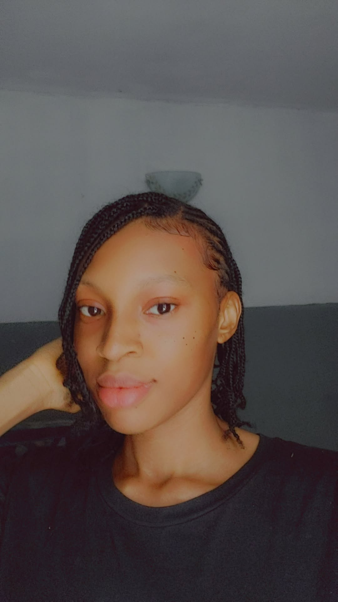

Education
Building a strong foundation through university learning and practical activities.
WELCOME TO MY PORTFOLIO
I am a 100-level Cybersecurity student at MIVA Open University, passionate about technology, problem-solving and learning how to protect digital information.

Curious mind. Continuous learner.A LITTLE INTRODUCTION
This website presents my educational journey, technical skills, projects and interests. It also includes an academic planner that helps me organise tasks and keep track of my studies.
Building a strong foundation through university learning and practical activities.
Developing my knowledge of web development and digital tools.
Learning through projects, feedback, curiosity and consistent practice.
STUDY SMARTER
Use the academic planner to add assignments, study sessions and deadlines. You can mark tasks as complete or remove them when they are no longer needed.
Open my planner →MY ACADEMIC SPACE